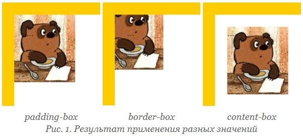

Свойство background-origin
определяет область позиционирования
фонового рисунка.
Это свойство не применяется,
когда значение
background-attachment
задано как fixed.
Синтаксис:
background-origin:
[padding-box | border-box | content-box]
[, [padding-box | border-box | content-box]]*
padding-box —
фон позиционируется
относительно края элемента
с учетом толщины границы.
border-box —
фон позиционируется
относительно границы,
при этом линия границы
может перекрывать изображение.
content-box —
фон позиционируется
относительно содержимого элемента.
Значений может быть несколько
(для каждого из множественных
фоновых рисунков),
при этом значения разделяются
между собой запятой.
Результат использования значений
свойства background-origin
для элемента с рамкой толщиной
20 пикселов показан на рис. 1.
Пример:
<!DOCTYPE html>
<html>
<head>
<meta charset="utf-8">
<title>background-origin</title>
<style>
.block {
border:
20px solid rgba(255,255,255,0.5);
padding:
20px;
background:
url(images/pattern.png)
no-repeat;
background-origin:
padding-box;
}
</style>
</head>
<body>
<div class="block">
Содержимое элемента
</div>
</body>
</html>
